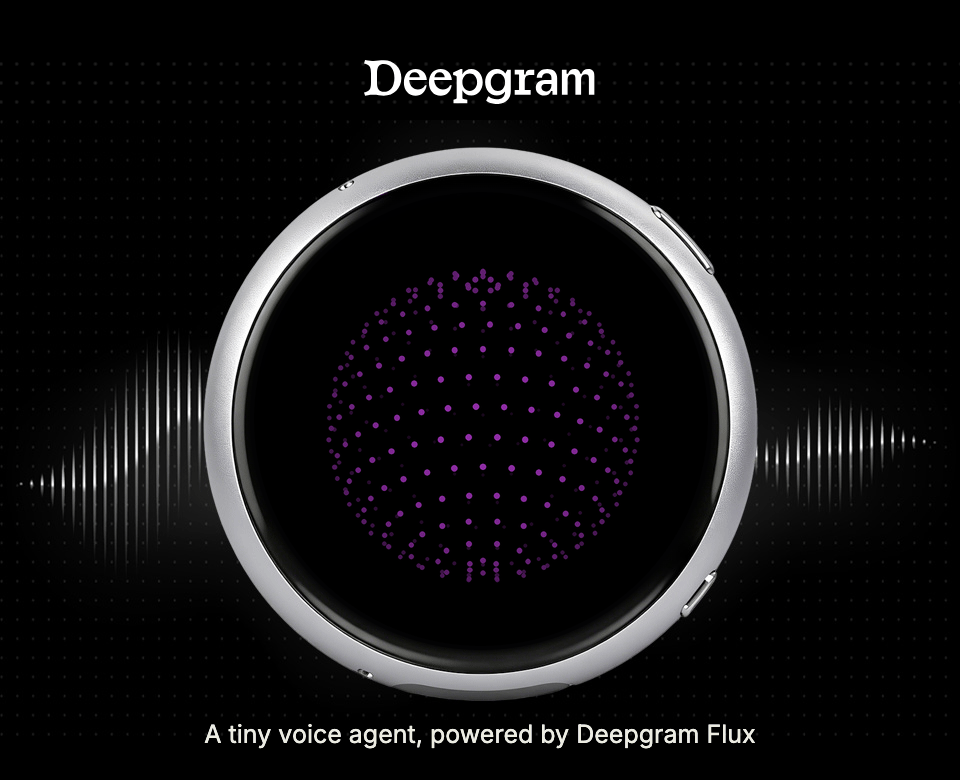
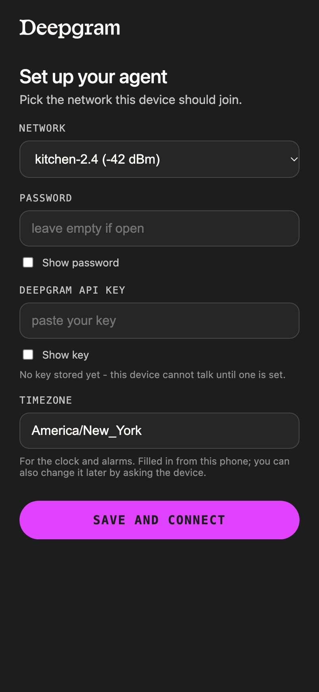

Open source · ESP32-S3
Microphone to Deepgram to speaker, over one WebSocket, held open by the board itself. No phone in the loop. No laptop. No bridge process on your desk pretending to be the device.

456 dots · 18 rings · drawn on-device
The whole loop, one board
A 466 × 466 round AMOLED, unmodified and out of the box. The face is drawn on-device, every frame, its behaviour driven by the session state — connecting, thinking, speaking, idle.
16 kHz capture in 80 ms chunks. The microphone stays open while the agent speaks, so you can cut in mid sentence and it stops.
Speech-to-text, the model, and text-to-speech on one authenticated socket. On the Deepgram Flux speech stack, with 151 voices in eleven languages.
Replies land faster than they play, so a 384 kB ring buffer absorbs the turn and the speaker drains it.
Tools wired to its own hardware
Not settings. The agent holds tools that reach the codec, the display and the session, so the way you reconfigure this device is to mention it out loud.
No touch needed. Ask for a volume change and it happens, hands free.
Saved to flash and folded into the system prompt as its own name.
A memory game in four colors. The agent calls out each new level, encouraging at first and snarky by fifteen.
Seven colors from Deepgram’s brand palette, Fuchsia by default. Ask by name or by plain color word.
A voice brings its language with it: 151 voices in eleven languages, by name, accent, or language, changed mid-conversation.
When the conversation is over, the device drops into low-power mode, saving battery and tokens.
Specifications
| Board | Waveshare ESP32-S3-Touch-AMOLED-1.75C |
|---|---|
| Display | 466 × 466 round AMOLED, QSPI, capacitive touch |
| Audio in | ES7210 · 16 kHz · 80 ms chunks · 4-channel TDM |
| Duplex | Full · on-device echo cancellation · interrupt by talking |
| Audio out | ES8311 · shared duplex I2S |
| Memory | 8 MB PSRAM · 32 MB flash |
| Faces | Orb (456 dots) · Spectrum (48 bars) |
| Colors | Seven, from Deepgram’s brand palette · Fuchsia by default |
| Game | Echo · four colors · levels called by the agent |
| Voices | 151 in eleven languages · changed by asking, in place |
| Endpoint | wss://agent.deepgram.com/v1/agent/converse |
| Firmware | 1.93 MB · ESP-IDF 5.5.5 |
| Setup | WPA2 access point, captive portal, QR to join |
Four steps, no toolchain
The published image carries no API key and no network, so it comes up asking for both.
A Deepgram API key comes with $200 of credit, and no credit card is required.
One file: bootloader, partition table and app together, so flashing needs to know nothing about the layout.
With esptool and the board in download mode.
esptool.py -c esp32s3 -p /dev/YOUR-PORT \
write_flash 0x0 deepgram_agent-merged.binIt raises its own encrypted access point and shows the code. Your phone joins, a page asks for your network and your Deepgram API key, and it reboots talking.
